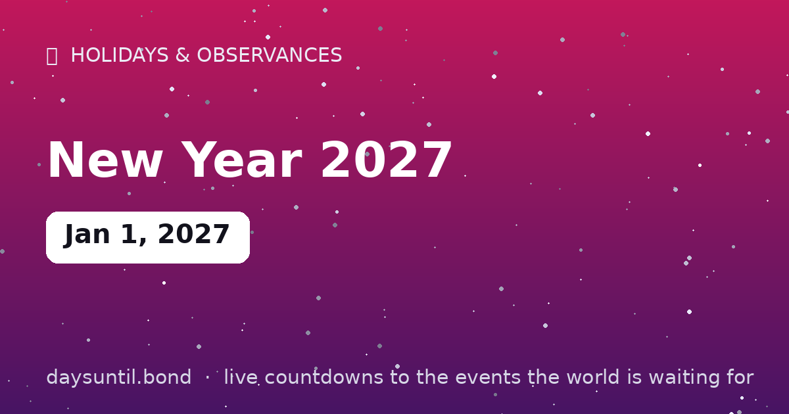

How Many Days Until New Year 2027?
New Year 2027 falls on Friday, January 1, 2027.
As of October 24, 2026: 69 days to go — 9 weeks and 6 days, 50 weekdays (19 weekend days), about 1,656 hours.

Quick facts
| Date | January 1, 2027 |
|---|---|
| Countdowns worldwide | 26 time-zone midnights |
| Followed by | the year's least productive morning |
About New Year 2027
January 1, 2027: the fireworks, the countdown, the resolutions. New Year's Eve is the most-watched countdown on the planet — every time zone on Earth counts down to its own midnight, 26 times across one rotating day.
The counter above runs to your local midnight on January 1 — the moment 2027 begins where you are.
The countdown to midnight is the original countdown — the one the whole planet counts together. This page runs to January 1, 2027, 00:00 in your local time zone, so your 'happy new year' moment is always accurate.
Why the new year arrives 26 times
New Year's Eve is the only countdown on Earth that happens repeatedly. Because time zones span roughly 26 hours — from UTC+14 in the Line Islands of Kiribati to UTC−11 in American Samoa and Midway Atoll — the planet crosses into January 1 twenty-six separate times over the course of about twenty-six hours.
The first inhabited places to see 2027 are Kiritimati (Christmas Island, Kiribati), Samoa and Tonga, all at UTC+13 or +14. The last is American Samoa and the uninhabited Baker and Howland Islands at UTC−11, which are among the very last places on Earth to enter any new year. That is why 'how many hours until the new year' has twenty-six correct answers.
What day is New Year 2027?
January 1, 2027 falls on a Friday. That is convenient in one direction and expensive in another: a Friday New Year's Day gives a three-day weekend for anyone who is not working, but it also means New Year's Eve is a Thursday night, which tends to push celebrations later and make the first Friday of January a very quiet day in most offices.
Christmas 2026 and New Year 2027 are exactly one week apart (December 25 and January 1 are both Fridays), so the whole holiday period collapses into a single seven-day span rather than the two separate blocks you get in years where they land midweek.
Why the year starts on January 1
January 1 is an inheritance from Rome. The Roman consular year began on January 1 in 153 BC, and the month itself is named for Janus, the two-faced god who looks backwards and forwards at once — which is a fairly precise description of what the date is for. The calendar drifted, was reformed by Julius Caesar in 46 BC, and was corrected again by Pope Gregory XIII in 1582 to produce the Gregorian calendar most of the world uses today.
Not everyone uses it for everything. The Chinese, Islamic, Hebrew, Ethiopian and Persian calendars all mark their new year on different dates, and several are lunar rather than solar, which is why their new year moves by about eleven days each solar year.
New Year 2027 around the world
| Place | Time zone | When 2027 arrives |
|---|---|---|
| Kiritimati, Kiribati | UTC+14 | First inhabited place on Earth |
| Samoa, Tonga | UTC+13 | Among the very first |
| Sydney, Australia | UTC+11 | Roughly 13 hours before London |
| London, UK | UTC+0 | The reference midnight |
| New York, USA | UTC−5 | Five hours after London |
| Honolulu, Hawaii | UTC−10 | Ten hours after London |
| American Samoa | UTC−11 | Among the very last |
The other new years of 2027
January 1 is one of many. Chinese New Year 2027 is expected to fall on February 6, beginning the Year of the Goat — the date follows the lunisolar calendar and moves each year between January 21 and February 20. It is the largest annual human migration on Earth, with hundreds of millions of journeys over a forty-day travel season.
Several others fall across the same twelve months: Nowruz, the Persian new year, arrives at the March equinox; Rosh Hashanah, the Jewish new year, falls in autumn; Enkutatash in Ethiopia lands in September; and the Islamic new year moves about eleven days earlier each solar year, as does Ramadan. If you work across borders, at least one colleague is starting a new year on a day that is not January 1.
Why resolutions fail — and what the evidence says instead
The honest answer is that a calendar date is a weak intervention. What tends to work is not more willpower attached to January 1, but a specific plan attached to a specific cue: deciding in advance what you will do, when, and where. That structure — an implementation intention, in the research literature — outperforms general intentions consistently, and it is why people who schedule a recurring slot do better than people who resolve to 'do more'.
Two smaller things help. Make the first step small enough that it is hard to fail, and pick a review date in advance rather than discovering failure in March. The other half of the tradition — looking backwards before looking forwards — is the part that survives scrutiny: an annual review of what actually happened is more useful than a list of intentions, and it does not require a holiday to do it.
New Year's Eve customs worth knowing
The midnight traditions are oddly specific and genuinely local. In Spain, you eat twelve grapes — one on each stroke of midnight — and the television broadcasts it live from Puerta del Sol. In Greece a pomegranate is smashed on the doorstep for luck, and the more seeds that scatter, the better the year. In Italy red underwear is worn; in Brazil lentils are eaten and seven waves jumped at the beach; in Denmark people stand on chairs and jump off them at midnight.
In Scotland the tradition is first-footing — the first person to cross the threshold after midnight, ideally a dark-haired man carrying coal, shortbread and whisky. Almost none of these customs are older than a few centuries, which is rather the point: the date is new every year, but the habits around it are whatever people decided to keep.
What happens when the counter reaches zero
It does not stop. The countdown at the top of this page switches automatically to a 'days since' count the moment January 1 begins in your time zone, and the page then serves as a countdown to January 1, 2028 — so the URL stays useful rather than expiring at midnight.
This matters more for New Year than for any other event on the site, because the date recurs by definition. A page that simply read '0 days' for twenty-four hours and then died would be useless to exactly the people most likely to visit it.
Your New Year 2027 countdown milestones
It is easier to plan against fixed points than against a number that moves. These are the dates on which the countdown to New Year 2027 passes each marker between now and the day itself — the last one falls on Thursday 31 December, when there will be 1 day left.
| Milestone | Day | Date | Remaining |
|---|---|---|---|
| 50 days | Thursday | 12 November 2026 | 50 days to go |
| 30 days | Wednesday | 02 December 2026 | 30 days to go |
| 14 days | Friday | 18 December 2026 | 14 days to go |
| 7 days | Friday | 25 December 2026 | 7 days to go |
| 3 days | Tuesday | 29 December 2026 | 3 days to go |
| 1 days | Thursday | 31 December 2026 | 1 day to go |
How the remaining time breaks down
69 days is the headline, but it is rarely the number that helps. 50 of those are weekdays and 19 fall on a weekend, which is the split that matters if you are planning around work. It is 9 weeks and 6 days, or roughly 2.3 months, or about 1,656 hours.
| Unit | Until New Year 2027 |
|---|---|
| Days | 69 |
| Weeks | 9 weeks and 6 days |
| Months (approx) | 2.3 |
| Weekdays | 50 |
| Weekend days | 19 |
| Hours | 1,656 |
| Sleeps | 69 |
Working days are Monday to Friday and do not subtract public holidays, which vary by country and employer — the full month-by-month split is on our weekday page for New Year 2027.